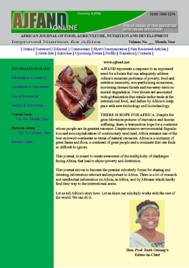

|
African Journal of Food, Agriculture, Nutrition and Development
Rural Outreach Program
ISSN: 1684-5358
EISSN: 1684-5374
Vol. 11, No. 5, 2011
|
Bioline Code: nd11052
Full paper language: English
Document type: Short Communication
Document available free of charge
|
|
|
African Journal of Food, Agriculture, Nutrition and Development, Vol. 11, No. 5, 2011
| en |
Workshop On Open Access Publishing: 10-11
November 2010, Kenyatta University, Nairobi, Kenya. Free access journal;
a case of African Journal of Food, Agriculture, Nutrition and
Development (AJFAND) www.ajfand.net
Kimiywe, J
|
| |
© Copyright 2011 - African Scholarly Science Communications Trust
Alternative site location: http://www.ajfand.net/
|
|